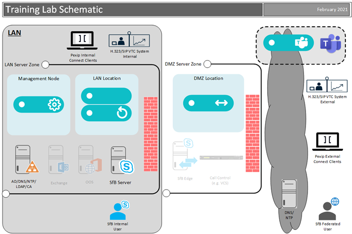

The primary goal of this training lab guide is to walk you through how to plan a Pexip Infinity installation, configure and deploy different Infinity components such as the Management and Conferencing Nodes, and to configure Infinity services as necessary to provide the desired outcomes.
In these labs, you will deploy and install a Pexip Management Node, two internal Pexip Conferencing Nodes (in the Transcoding Role) within a LAN location, and one external Pexip Conferencing Node (initially in the Transcoding Role, then switching to the Proxying Edge role) within a DMZ location. You can see the topology in the diagram below. Both locations will handle standards-based SIP/H.323 and WebRTC video traffic, as well as integrate with different ecosystems. For example, the internal Pexip Conferencing Nodes will be integrated with an on-premises Skype for Business 2015 deployment, whilst the Pexip Edge Node will handle federated Microsoft calls via Lync or Skype for Business environments at other organisations, or Office 365. Additional integrations with Microsoft Teams, Google Hangouts and the Pexip Private Cloud will also be enabled.
You should refer continuously to https://docs.pexip.com, which is our official documentation site regarding configuring Pexip. We will provide you with links in each section to various documentation pages where appropriate.
The guide itself has broken into two parts:
Each group has a name (e.g. “vc1”, “vc2” etc., and may even have a location appended such as “vc1-osl”) and uses a shared domain space of pexip.net. These are used together to give a unique domain namespace for each group’s lab (e.g., “vc20-osl.pexip.net”). Each Node also has a hostname (e.g. “mgr”, “conf01”, “edge”), and we can prepend this to the group domain to give the nodes Fully Qualified Domain Names (FQDNs). We can then use these FQDNs to browse to the nodes (e.g., https://mgr.vc20-osl.pexip.net or https://edge.vc20-osl.pexip.net).
When managing devices in this lab, please refer to the lab sheet for your group. Each task will refer to the relevant lab sheet section if required. For your information, we have tried to keep the usernames consistent and passwords simple, with most passwords set to “Pexip123”. However, some usernames and passwords can be different, especially for cloud services, thus you should consult the lab sheet.
